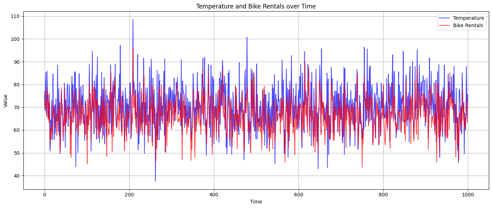
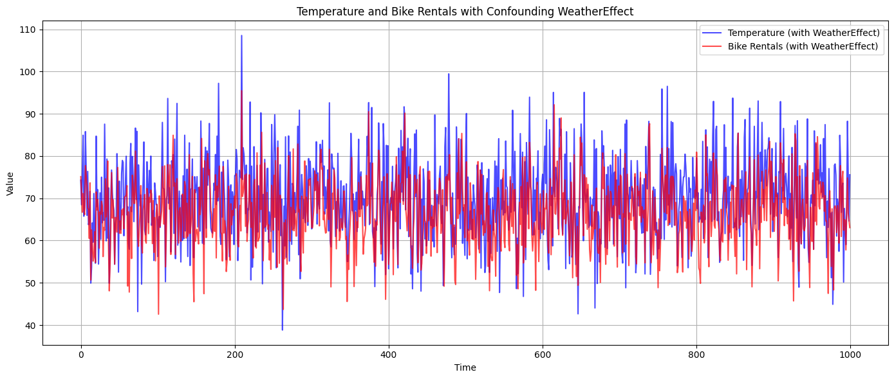

7 Time-dependent Causal Inference
Studying temporal data, focusing on causal inference, is a highly interdisciplinary endeavor that draws from statistics, machine learning, econometrics, and domain-specific fields like finance, medicine, and the social sciences. Many methods have been developed for this purpose. This chapter can help you get started.
We’ll delve into time-series data and explore the broader realm of temporal data, such as that found in biological networks. It’s essential to address both forms of time-dependence because there are temporal processes of interest where the process cannot be decomposed into a sequence of discrete observations.
7.1 Time-series Data
A time-series is a collection of observations obtained sequentially over time. It’s characterized by its temporal order, meaning the order in which the data is collected matters. In other words, a time series \(\mathbf{X}\) is a sequence of data points \((\mathbf{x}_1, \mathbf{x}_2, \ldots, \mathbf{x}_T)\), where the time indices \(t_1, t_2, \ldots, T\) are such that \(t_1 < t_2 < \ldots < T\), and \(\mathbf{x}_t=(x_{t}^1, x_{t}^2, \dots, x_{t}^d)\) is a \(d\)-dimensional feature vector of observations at time \(t\). The single-variable case can be recovered by setting the number of features, \(d\), to \(1\).
In many cases, time series data points are collected at uniformly spaced intervals (e.g., hourly, daily, or monthly). However, this is not a strict requirement; some time series data may be irregularly spaced. Also, the value of a time-series at a given time point might depend on previous values in the series. Time series data can often be decomposed into components that describe how the data varies. Two such components are trends and seasonality, for example. A trend is the direction in which the data is moving over a long period of time. Seasonality is a regular fluctuation that repeats over a fixed period (e.g., hourly).
Some common examples of time series include stock prices, daily temperature measurements, hourly counts of unique visitors to a website. In each of these examples, observations are made sequentially over time, and the order of the observations affects any analysis or modeling that might be done. So, how is causality typically defined for time-series data?
7.1.1 Causality in Time-Series
The debate surrounding the nature of causality, its connection to time, and its definition concerning time-series or other time-dependent data has a rich history. Eichler (2013) provide comprehensive insights into both the philosophical and empirical facets of this conversation. Drawing from these resources, we highlight the following core concepts:
- Temporal precendence: A cause precedes effect in time
- Physical influence: Changes in the cause lead to changes in the effect
- Probability raising: A cause increases the likelihood of an effect’s occurrence
7.2 Granger Causality
Granger causality is a statistical hypothesis test used to test if one time series can predict another time series (Clive William John Granger 1969). This technique says that \(X\) is a “Granger-cause” of \(Y\) if past values of \(X\) reduce the variance in the prediction of \(Y\) Shojaie and Fox (2021), that is if
\[Var\left[Y_t - P(Y_t \vert \mathit{H}_{< t})\right] < Var\left[Y_t - P(Y_t \vert \mathit{H}_{< t}\setminus X_{< t})\right],\]
where \(\mathit{H}_{< t}\) is the history of all relevant variables before time \(t\) and \(\mathit{H}_{< t}\setminus X_{< t}\) is the history before time \(t\), minus all values of \(X\) before time \(t\) (Shojaie and Fox 2021). In practice, \(\mathit{H}_{< t}\) includes the values of all known and relevant variables in the problem up to time \(t-1\).
While Granger causality assumes that the ability to predict correctly means that there must be an underlying causal effect (Shojaie and Fox 2021), (Hoover 2001) asserts that it does not establish the existence of causal relationships. The Granger causality test can only tell us that by including past values of \(X\) in the predictor for \(Y\), we obtain a better prediction for \(Y\) than we would without \(X\). It does not place any conditions on how well \(X\) must predict \(Y\) compared to other possible predictors for \(Y\) in order to be a Granger-cause of \(Y\) (Kleinberg 2012). Despite this, Granger causes can be considered prima facie, or potential, causes (Eichler 2013) that can be investigated further. As such, Granger causality can be considered as a causal discovery method (Gong et al. 2023).
In practice, the Granger test is most commonly performed by fitting the data using a vector autoregressive model (VAR) (Kilian 2006) of the form
\[\mathbf{A}^0 \mathbf{x}_t = \sum_{k=1}^m \mathbf{A}^k \mathbf{x}_{t-k} + \mathbf{e}_t,\]
where each \(\mathbf{A}^k\) is a \(d\)-dimensional square matrix describing the relationship between the \(d\) features at lags \(k=0, 1, \ldots, m\), where the lag is just the number of time units the data is shifted by. For example, the \(3rd\) term in the sum describes the contribution that data from time \(t-3\) makes to the data at time \(t\). \(\mathbf{e}_t\) is a \(d\)-dimensional error term (Shojaie and Fox 2021).
7.2.1 Assumptions required to use a VAR model
In order to use a VAR model of the form shown above, several assumptions need to be made about the data (Shojaie and Fox 2021):
- Continuous values: The time-series data cannot have discrete or categorical features, only real numbers. Many real-world datasets, especially those of interest in machine learning (including one used as a case-study in this chapter), have categorical and discrete features.
- Linear data: Granger causality assumes linear relationships. If the relationship between the time series is not approximatelylinear, then the results of the standard Granger test might not be valid. There are extensions of the Granger causality test to deal with nonlinear relationships, but the standard test assumes linearity.
- Consistent sampling rate: sampling frequency must be constant and match the real-world time lag of any underlying causal process we hope to detect. If the sampling rate is mismatched with the time-scale of any underlying causal relationship, the Granger causality test is likely to produce misleading results.
- Known lags: Granger causality tests for whether past values of one time series (\(X\)) predicts future values of another series (\(Y\)) and depends on the number of past observations (the lag) of \(X\) that are used to predict the future values of \(Y\). Poorly chosen lags can lead to inaccurate or misleading results.
- Stationarity: A stationary time-series’ statistical properties are time-invariant. The underlying process need not be static in time. For example, it can oscillate, have trends, or cyclical patterns; they just have to be consistent over time.
- No measurement errors or unknown variables: Measurement errors and unknown variables can lead to endogeneity in the model, which is when a variable that affects the dependent variable and is correlated with the independent variable(s) is omitted from the model (e.g. an unobserved confounder).
If any of the above assumptions do not hold for a time-series, then using a VAR model in a Granger causality test will not be able to identify Granger causality (Shojaie and Fox 2021). However, if the assumptions do hold, then Granger causality can be tested for using the following procedure:
- Null Hypothesis: The null hypothesis for a Granger causality test is that past values of \(X\) do not reduce the variance in predicting \(Y\).
- Model Fitting to test null hypothesis: Two models are fitted
- One using only the past values of \(Y\) to predict future values of \(Y\)
- The other uses the past values of both \(Y\) and \(X\) to predict future values of \(Y\).
- Statistical Test: An F-test is usually conducted to compare the two models. If the model trained on past values of both \(Y\) and \(X\) is better at predicting \(Y\) than the model trained with just past \(Y\) values, then we reject the null hypothesis and conclude that \(X\) Granger-causes \(Y\).
7.2.2 An example calculation
We will create a synthetic bike-sharing dataset to use for demonstrating calculations in this chapter. The dataset will use a temperature feature and the number of bike rentals will be the target variable. We set a random seed so that the dataset that is generated will be fixed. The dataset will be 1000 points with a mean temperature of 70 degrees (with a std deviation of 10).
We then perform a Granger causality test using the statsmodels Python library.
import numpy as np
import pandas as pd
# Set random seed for reproducibility
np.random.seed(42)
# Number of data points
n = 1000
temperature = np.random.normal(70, 10, n)
error = np.random.normal(0, 5, n) # Some random error
# Assume that bike rentals depend on temperature with a lag
lagged_temperature = np.roll(temperature, shift=1)
lagged_temperature[0] = temperature[0] # Handle the first value
bike_rentals = 10 + 0.5*temperature + 0.3*lagged_temperature + error
df = pd.DataFrame({
'Temperature': temperature,
'Bike_Rentals': bike_rentals
})The Temperature column represents daily temperatures, and the Bike Rentals column represents the number of bike rentals for the day. Let’s plot the data.
import matplotlib.pyplot as plt
# Plotting the dataset
plt.figure(figsize=(14, 6))
plt.plot(df['Temperature'], label='Temperature', color='blue', alpha=0.7)
plt.plot(df['Bike_Rentals'], label='Bike Rentals', color='red', alpha=0.7)
plt.title('Temperature and Bike Rentals over Time')
plt.xlabel('Time')
plt.ylabel('Value')
plt.legend()
plt.tight_layout()
plt.grid(True)
plt.show()Figure 7.1 visualizes the relationship between Temperature (in blue) and Bike Rentals (in red) over time. You can observe the relationship and fluctuations between the two variables. Given the synthetic data generation process, the bike rentals generally trend alongside the temperature, with some noise added to the rentals.
Ordinarily, before running a Granger causality test we should check if, for the dataset being studied, the assumptions in Section 7.2.1 are true. Since we have constructed a synthetic dataset, we know that it meets all the criteria and the stationarity test can be omitted. When you do need to test for stationarity, two commonly used statistical tests are the Augmented Dickey-Fuller (ADF) test (Said and Dickey 1984) and the Kwiatkowski–Phillips–Schmidt–Shin (KPSS) test (Kwiatkowski et al. 1992).
To perform the Granger causality test, we need to ensure the dataset is in a format suitable for time series analysis with lags.
import statsmodels.api as sm
from statsmodels.tsa.stattools import grangercausalitytests
# Define data in the format for Granger test
data_for_test = df[['Bike_Rentals', 'Temperature']]
max_lag = 5
gc_test = grangercausalitytests(data_for_test, max_lag, verbose=True)The output is:
Granger Causality
number of lags (no zero) 1
ssr based F test: F=123.8638, p=0.0000 , df_denom=996, df_num=1
ssr based chi2 test: chi2=124.2369, p=0.0000 , df=1
likelihood ratio test: chi2=117.0979, p=0.0000 , df=1
parameter F test: F=123.8638, p=0.0000 , df_denom=996, df_num=1
Granger Causality
number of lags (no zero) 2
ssr based F test: F=60.4864 , p=0.0000 , df_denom=993, df_num=2
ssr based chi2 test: chi2=121.5820, p=0.0000 , df=2
likelihood ratio test: chi2=114.7275, p=0.0000 , df=2
parameter F test: F=60.4864 , p=0.0000 , df_denom=993, df_num=2
Granger Causality
number of lags (no zero) 3
ssr based F test: F=39.8454 , p=0.0000 , df_denom=990, df_num=3
ssr based chi2 test: chi2=120.3814, p=0.0000 , df=3
likelihood ratio test: chi2=113.6504, p=0.0000 , df=3
parameter F test: F=39.8454 , p=0.0000 , df_denom=990, df_num=3
Granger Causality
number of lags (no zero) 4
ssr based F test: F=29.5971 , p=0.0000 , df_denom=987, df_num=4
ssr based chi2 test: chi2=119.4681, p=0.0000 , df=4
likelihood ratio test: chi2=112.8290, p=0.0000 , df=4
parameter F test: F=29.5971 , p=0.0000 , df_denom=987, df_num=4
Granger Causality
number of lags (no zero) 5
ssr based F test: F=24.6424 , p=0.0000 , df_denom=984, df_num=5
ssr based chi2 test: chi2=124.5895, p=0.0000 , df=5
likelihood ratio test: chi2=117.3848, p=0.0000 , df=5
parameter F test: F=24.6424 , p=0.0000 , df_denom=984, df_num=5
The Granger causality test for the newFor all lags in the calculation (1 to 5), the p-values are essentially 0. This indicates strong evidence against the null hypothesis, which means that temperature Granger-causes (AKA has a predictive effect on) bike rentals for all tested lags. This is consistent with the synthetic data generation process, where bike rentals were influenced by both the current temperature and the temperature from the previous day (lag 1).
7.2.3 Violating an assumption
Now we will synthesize another bike rental dataset that violates the no endogeneity assumption discussed in Section 7.2.1 to illustrate the importance of the assumptions. We introduce a weather variable, WeatherEffect, that explicitly confounds the relationship between temperature and bike rentals. WeatherEffect will be omitted from the Granger test.
import numpy as np
import pandas as pd
# Set random seed for reproducibility
np.random.seed(42)
n = 1000
temperature = np.random.normal(70, 10, n)
error = np.random.normal(0, 5, n)
# Generate WeatherEffect variable
weather_effect = np.random.normal(0, 5, n)
# Modify Temperature and Bike Rentals generation to account for WeatherEffect
temperature_with_effect = temperature + 0.2 * weather_effect
bike_rentals_with_effect = 10 + 0.5 * temperature_with_effect + 0.3 * np.roll(temperature_with_effect, shift=1) + error + 0.5 * weather_effect
# Create dataframe without WeatherEffect for Granger test
df_effect = pd.DataFrame({
'Temperature': temperature_with_effect,
'Bike_Rentals': bike_rentals_with_effect
})import matplotlib.pyplot as plt
# Plotting the confounded dataset
plt.figure(figsize=(14, 6))
plt.plot(df_effect['Temperature'], label='Temperature (with WeatherEffect)', color='blue', alpha=0.7)
plt.plot(df_effect['Bike_Rentals'], label='Bike Rentals (with WeatherEffect)', color='red', alpha=0.7)
plt.title('Temperature and Bike Rentals with Confounding WeatherEffect')
plt.xlabel('Time')
plt.ylabel('Value')
plt.legend()
plt.tight_layout()
plt.grid(True)
plt.show()
Figure 7.2 visualizes the relationship between temperature (influenced by the WeatherEffect, shown in blue) and bike rentals (also influenced by the WeatherEffect, shown in red) over time.
The confounding WeatherEffect is not directly shown in the plot, but its influence is visible in the synchronized movements of temperature and bike rentals. This is a good visual representation of how omitting a relevant variable can lead to spurious relationships between other variables.
Now we run the Granger causality test on this confounded data.
import statsmodels.api as sm
from statsmodels.tsa.stattools import grangercausalitytests
# Define data in the format for Granger test
data_for_test = df_effect[['Bike_Rentals', 'Temperature']]
max_lag = 5
gc_test = grangercausalitytests(data_for_test, max_lag, verbose=True)Output of the Granger test is similar to the unconfounded result from Section 7.2.2:
Granger Causality
number of lags (no zero) 1
ssr based F test: F=67.3699 , p=0.0000 , df_denom=996, df_num=1
ssr based chi2 test: chi2=67.5729 , p=0.0000 , df=1
likelihood ratio test: chi2=65.3856 , p=0.0000 , df=1
parameter F test: F=67.3699 , p=0.0000 , df_denom=996, df_num=1
Granger Causality
number of lags (no zero) 2
ssr based F test: F=28.1724 , p=0.0000 , df_denom=993, df_num=2
ssr based chi2 test: chi2=56.6286 , p=0.0000 , df=2
likelihood ratio test: chi2=55.0803 , p=0.0000 , df=2
parameter F test: F=28.1724 , p=0.0000 , df_denom=993, df_num=2
Granger Causality
number of lags (no zero) 3
ssr based F test: F=18.1634 , p=0.0000 , df_denom=990, df_num=3
ssr based chi2 test: chi2=54.8755 , p=0.0000 , df=3
likelihood ratio test: chi2=53.4186 , p=0.0000 , df=3
parameter F test: F=18.1634 , p=0.0000 , df_denom=990, df_num=3
Granger Causality
number of lags (no zero) 4
ssr based F test: F=13.8168 , p=0.0000 , df_denom=987, df_num=4
ssr based chi2 test: chi2=55.7713 , p=0.0000 , df=4
likelihood ratio test: chi2=54.2658 , p=0.0000 , df=4
parameter F test: F=13.8168 , p=0.0000 , df_denom=987, df_num=4
Granger Causality
number of lags (no zero) 5
ssr based F test: F=11.1134 , p=0.0000 , df_denom=984, df_num=5
ssr based chi2 test: chi2=56.1880 , p=0.0000 , df=5
likelihood ratio test: chi2=54.6588 , p=0.0000 , df=5
parameter F test: F=11.1134 , p=0.0000 , df_denom=984, df_num=5Again, the p-values are essentially 0 for all lags in the calculation (1 to 5). Again, this indicates strong evidence that temperature Granger-causes bike rentals for all tested lags. However, since the temperature and bike rentals are being influenced by the omitted confounding WeatherEffect variable, we have an endogeneity problem and cannot trust the results of the Granger causality test. This example shows that one must be careful to check that the dataset to which the Granger test is being applied does not violate the necessary assumptions because the test itself cannot distinguish between data that does or does not violate the underlying assumptions.
7.2.4 Extensions to Granger causality
To address the limitations posed by many of the assumptions discussed in Section 7.2.1, many extensions of Granger causality have been devised. (Shojaie and Fox 2021) contains a detailed discussion of the extensions and we would encourage you to look there for details on any of these methods. This section simply provides an incomplete list of the extensions from (Shojaie and Fox 2021).
- network Granger causality: Used to identify Granger-causes and represent them as a graph when there are many variables, such as in a gene regulation network Nicholson, Matteson, and Bien (2015). Generally speaking, in these methods, Granger causal relationships appear as nonzero entries in the lag matrices \(\mathbf{A}^k\) and instantaneous causal effects appear as nonzero entries in the inverse covariance matrix of the error term \(\mathbf{e}_t\) (Shojaie and Fox 2021).
- Lag selection VAR models: Estimate the optimal lag from the data. This helps with the known lag assumption Nicholson, Matteson, and Bien (2015).
- Non-stationary VAR models: Models to circumvent the stationarity assumption of Granger causality Bai, Safikhani, and Michailidis (2020).
- Discrete-valued time-series: Applications to data with values that are not continuous, e.g. categorical data Weiß (2018)
- Mismatched sampling rates: Addresses the sampling rate not matching the timescale of underlying causal relationships Zhou, Zha, and Song (2013)
- Nonlinear time-series: Methods to go beyond the requirement of linear relationships between variables Amblard and Michel (2010)
7.3 Logic-based Methods
This section introduces logic-based methods of studying time series data. Logic-based methods were introduced in (Kleinberg and Mishra 2009), which represented causal relationships as propositions of formulas in probabilistic temporal logic. Logic-based methods are a combination of causal discovery and causal inference in time-series data (Gong et al. 2023). In what follows, we introduce the concepts needed to understand logic-based methods, before working through a detailed example of an advancement that was introduced in (Zheng and Kleinberg 2017).
7.3.1 Probabilistic Computation Tree Logic (PCTL)
The methods discussed in this book thus far don’t explicitly include the window of time between events with a causal relationship when computing things like average treatment effects. That makes it difficult to apply such methods to time-series problems where the time it takes for a cause to produce its effect is important and the time interval between cause and effect can impact the probability of the effect’s occurrence. This chapter focuses on methods that accounts for these temporal relationships and also describes a method of automated reasoning that represents causal relationships as propositions of formulas in probabilistic temporal logic.
7.3.1.1 Temporal Logic
Temporal logic is a formal system for expressing and reasoning about propositions that hold at different points in time. It provides a set of operators and symbols for specifying temporal relationships that lets us represent causal relationships as temporal logic formulas. These formulas can then be manipulated and evaluated to analyze patterns in temporal data, such as the timing and sequence of events, and infer causal relationships between those events. However, this does not allow for probabilistic relationships.
If we want an automated way of capturing the temporal and probabilistic relationships between events, then we need to describe temporal relationships between variables, in the presence of uncertainty. This is provided by probabilistic temporal logic (PTL).
7.3.1.2 Probabilistic temporal logic
Probabilistic temporal logic (PTL) extends traditional temporal logic by incorporating probability. In PTL, propositions are assigned probabilities rather than being considered purely true or false. This allows for more nuanced reasoning about the temporal relationships between events. For example, if event A typically happens before event B but not always, we can express this uncertainty using probabilities. However, PTL alone does not allow us to study how the system evolves in time, since a probabilistic system can have many possible futures.
By combining probabilistic temporal logic with computation tree logic (CTL) (Clarke and Schlingloff 1996), we get probabilistic computation tree logic (PCTL) (Hansson and Jonsson 1990), which is a probabilistic extension of CTL that is used to reason about the behavior of probabilistic systems that evolve in time. PCTL can be used to specify and verify various properties of probabilistic systems, such as the probability of reaching a certain state, the expected time to reach a certain state, and the long-term behavior of the system. PCTL can also specify temporal constraints on the behavior of a probabilistic system, answer questions about possible futures, and compute the likelihood of a possible future event happening in a specific time window.
7.3.1.3 Probabilistic Kripke Structures
Probabilistic Computation Tree Logic describes a system’s possible transitions with a probabilistic Kripke structure (PKS), which is a directed graph where each node represents a possible state of the system, and each edge (1) represents a probabilistic transition between states and (2) is labeled with a proposition that describes the conditions under which the transition can occur.
By modeling the behavior of a probabilistic system, the PKS allows us to define the truth of temporal statements with respect to the structure. For example, a temporal statement such as “eventually, property \(P\) holds with probability at least 0.9” is true in a state of the structure if there is a path from that state to a future state where property \(P\) is true with probability at least 0.9. PKSs are also used in the formal verification of probabilistic systems, where they provide a way to model system and verify that it satisfies a given specification.
7.3.1.3.1 Describing the System
A system in PCTL is described using two components: a set of atomic propositions and a probabilistic Kripke structure. In PCTL, what we know about a variable that might appear in a typical causal graph, is written as a logical proposition that can also have a probability and temporal aspects.
The set of atomic propositions is commonly written as \(A\) and the PKS is written as a four-tuple \(K=(S, s_i, L, T)\) (Kleinberg 2012), where
- \(S\) is a finite set of states
- \(s_i\) is the initial state
- \(L: S \to 2^{|A|}\) is a labeling function that tells us which atomic propositions are true at each state
- \(T: S\times S \to [0,1]\) is a probabilistic transition function, where \(\forall s \in S, \sum_{s^{\prime}\in S} T(s,s^{\prime})=1\)
\(K\) defines which transitions are possible and the probability of each transition and \(L(s)\) is the label(s) of state \(s\). Note that, in practice, we will not define or infer \(K\).
PCTL has also been extended to support the case where discrete and continuous values are present in the same dataset (Kleinberg 2011).
7.3.1.3.2 Example: The Monty Hall Problem
This section presents a detailed example of how you would describe a system with a probabilistic Kripke structure (PKS). Our example is the famous Monty Hall problem. The Monty Hall problem is a probability puzzle based on a game show called “Let’s Make a Deal,” which was hosted by Monty Hall. The problem is named after him and became popular after a reader’s question appeared in Marilyn vos Savant’s “Ask Marilyn” column in Parade magazine in 1990 (contributors 2023).
The problem is as follows:
- There are three closed doors: Door 1, Door 2, and Door 3.
- Behind one of the doors, there is a car (the desired prize), and behind the other two doors, there are goats (undesired prizes).
- The player chooses one of the doors (say, Door 1).
- The host, Monty Hall, who knows what’s behind each door, opens one of the remaining doors (say, Door 2) to reveal a goat.
- The host then asks the player if they want to switch their choice to the other unopened door (in this case, Door 3) or stick with their original choice (Door 1).
The Monty Hall problem asks the player to determine the best strategy: should they stick with their original choice or switch to the other unopened door? We will not discuss the solution to the problem here. Instead, we describe the problem as a probabilistic Kripke structure.
Monty Hall System States
First, we need a set of atomic propositions, \(A\), that is representative of the problem:
| Proposition | Description |
|---|---|
| CarBehindDoor1 | The car is behind door 1 |
| CarBehindDoor2 | The car is behind door 2 |
| CarBehindDoor3 | The car is behind door 3 |
| PlayerChoosesDoor1 | The player initially chooses door 1 |
| PlayerChoosesDoor2 | The player initially chooses door 2 |
| PlayerChoosesDoor3 | The player initially chooses door 3 |
| PlayerSwitches | The player switches their choice of door |
| HostOpensDoor1 | The host opens door 1 to reveal a goat |
| HostOpensDoor2 | The host opens door 2 to reveal a goat |
| HostOpensDoor3 | The host opens door 3 to reveal a goat |
| PlayerWins | Player’s final choice is door with the car |
| PlayerLoses | Player’s final choice is door with a goat |
Next, we need a finite set of states. In the Monty Hall problem, the state of the system can be described from the perspective of the player or the host. The host already knows which doors the car and goats are found behind. The player does not have this information at the start of the game. From the player’s perspective, the state of the system is defined by a combination of the truth values of the atomic propositions in the above table. In other words, the state is what the player knows to be true and false.
Since the Monty Hall problem is simple, we can describe the sequence of states in a simple table. Below, we present three sample runs of the game, in table form. The first column lists the atomic propositions, the remaining columns are labeled with the time steps showing the five steps in the game. When a column has an entry of 1, it means the proposition is true at that time step. The first column in a row with a 1 is the time step where the proposition transitions from false to true. The value of each proposition at each time step shows which transitions are possible.
Game 1
Car is behind door 1. Player chooses door 2, host opens door 3, player chooses to switch doors, player wins.
| Proposition | \(t_1\) | \(t_2\) | \(t_3\) | \(t_4\) | \(t_5\) |
|---|---|---|---|---|---|
| CarBehindDoor1 | 1 | 1 | 1 | 1 | 1 |
| CarBehindDoor2 | 0 | 0 | 0 | 0 | 0 |
| CarBehindDoor3 | 0 | 0 | 0 | 0 | 0 |
| PlayerChoosesDoor1 | 0 | 0 | 0 | 1 | 1 |
| PlayerChoosesDoor2 | 0 | 1 | 1 | 0 | 0 |
| PlayerChoosesDoor3 | 0 | 0 | 0 | 0 | 0 |
| PlayerSwitches | 0 | 0 | 0 | 1 | 0 |
| HostOpensDoor1 | 0 | 0 | 0 | 0 | 0 |
| HostOpensDoor2 | 0 | 0 | 0 | 0 | 0 |
| HostOpensDoor3 | 0 | 0 | 1 | 0 | 0 |
| PlayerWins | 0 | 0 | 0 | 0 | 1 |
| PlayerLoses | 0 | 0 | 0 | 0 | 0 |
Game 2
Car is behind door 2. Player chooses door 2, host opens door 1, player chooses to switch doors, player loses.
| Proposition | \(t_1\) | \(t_2\) | \(t_3\) | \(t_4\) | \(t_5\) |
|---|---|---|---|---|---|
| CarBehindDoor1 | 0 | 0 | 0 | 0 | 0 |
| CarBehindDoor2 | 1 | 1 | 1 | 1 | 1 |
| CarBehindDoor3 | 0 | 0 | 0 | 0 | 0 |
| PlayerChoosesDoor1 | 0 | 0 | 0 | 0 | 0 |
| PlayerChoosesDoor2 | 0 | 1 | 1 | 0 | 0 |
| PlayerChoosesDoor3 | 0 | 0 | 0 | 1 | 1 |
| PlayerSwitches | 0 | 0 | 0 | 1 | 0 |
| HostOpensDoor1 | 0 | 0 | 1 | 0 | 0 |
| HostOpensDoor2 | 0 | 0 | 0 | 0 | 0 |
| HostOpensDoor3 | 0 | 0 | 0 | 0 | 0 |
| PlayerWins | 0 | 0 | 0 | 0 | 0 |
| PlayerLoses | 0 | 0 | 0 | 0 | 1 |
Game 3
Car is behind door 2. Player chooses door 3, host opens door 1, player chooses to switch doors, player wins.
| Proposition | \(t_1\) | \(t_2\) | \(t_3\) | \(t_4\) | \(t_5\) |
|---|---|---|---|---|---|
| CarBehindDoor1 | 0 | 0 | 0 | 0 | 0 |
| CarBehindDoor2 | 1 | 1 | 1 | 1 | 1 |
| CarBehindDoor3 | 0 | 0 | 0 | 0 | 0 |
| PlayerChoosesDoor1 | 0 | 0 | 0 | 1 | 1 |
| PlayerChoosesDoor2 | 0 | 0 | 0 | 0 | 0 |
| PlayerChoosesDoor3 | 0 | 1 | 1 | 0 | 0 |
| PlayerSwitches | 0 | 0 | 0 | 1 | 0 |
| HostOpensDoor1 | 0 | 0 | 1 | 0 | 0 |
| HostOpensDoor2 | 0 | 0 | 0 | 0 | 0 |
| HostOpensDoor3 | 0 | 0 | 0 | 0 | 0 |
| PlayerWins | 0 | 0 | 0 | 0 | 1 |
| PlayerLoses | 0 | 0 | 0 | 0 | 0 |
The initial state is that all doors are closed. In the next time step, \(t_1\), the player chooses a door, making one of the propositions PlayerChoosesDoor<n> true \((n=1,2,3)\). Next, the host opens one of the other two doors that is hiding a goat, thereby setting one of the HostOpensDoor<m> propositions to true \((m=1,2,3)\) and one of the CarBehindDoor<k> propositions to false \((k=1,2,3)\). Finally, the player can switch to the remaining closed door, which will set PlayerSwitches to true, or they can keep their initial selection. The final state is either PlayerWins or PlayerLoses. Lastly, note that the position of the car is unknown to the player at the start of the game. If we rewrite the three example games above from the perspective of the player, then we would have to mark the CarBehindDoor<n> propositions as unknown. Note that we could also add propositions for the positions of the two goats, but those are complements for the position of the car. We mention this to note that the atomic propositions used for a problem are not necessarily etched in stone, but depend on how you wish to describe the problem and the states of the system at each time step.
7.3.1.3.2.1 Properties of State and Path Formulas
Computation tree logic has formulas that state what must be true for a certain state (state formulas) and formulas that define what must be true for an entire sequence of states (path formulas). For example, stating that one of the atomic proposition in \(A\) must be true in a given state can be specified as a state formula. To make it more concrete, consider the Monty Hall problem.
We can summarize properties of state and path formulas as follows:
- Each proposition in \(A\) is a state formula
- If \(f\) and \(g\) are state formulas, so are \(\neg f\), \(f \lor g\), \(f \land g\), and \(f \to g\).
- If f and g are state formulas, and \(t\) is a non-negative integer or \(\infty\), then \(f\, U^{\leq t} g\) and \(f\, W^{\leq t} g\) are path formulas
- If \(f\) is a path formula and \(0 \leq p\leq 1\), \([f]_{\geq p}\) and \([f]_{> p}\) are state formulas.
The latter three properties in the above list need to be explained:
Property (2) says that state formulas can be combined to make new state formulas using the standard propositional logic operations of or, and, and not and from the state transitions allowed by computation tree logic. The state is simply a collection of statements that are true at that time, which means we can use this property to automatically label states (Kleinberg (2012)).
The \(U\) and \(W\) shown in property (3) are the until and unless operators of PCTL, respectively. \(f\,U^{\leq t}\, g\) is a shorthand that means \(f\) must be true at every state along the path until there is a state where \(g\) becomes true, and this must happen within \(t\) time steps. \(f\, W^{\leq t}\, g\) is a shorthand that means \(f\) must be true at every state along the path for at least \(t\) time steps unless \(g\) becomes true within \(t\) time steps. For this reason, \(W\) is also called the weak until, hence it’s choice of letter.
Property (4) tell us that we can construct state formulas out of the until and unless path formulas by adding probabilities to them. For example, \([f\, U^{\leq t}\, g]_{\geq p}\), which can also be written as \(f\, U^{\leq t}_{\geq p}\, g\), means that with a minimum probability of \(p\), \(g\) will become true within \(t\) time steps and \(f\) will remain true along the path until that happens. This is a state formula, whose probability is calculated by summing the probabilities of the paths that originate from this state. Note that a path probability is the product of transition probabilities along the path.
Before moving on to considering how we can identify causes, we need to introduce one more temporal operator, \(\leadsto\), “leads to”. \(f_1 \leadsto^{\leq t}_{\geq p} f_2 \equiv AG[f_1 \to F^{\leq t}_{\geq p} f_2]\), means that for every path from the current state, states where \(f_1\) is true leads to states where \(f_2\) is true, and that the transitions between those states occur within \(t\) time step, with probability \(p\). Given this definition, consider two formulas, \(a\) and \(b\), that occur at times \(t_1\) and \(t_2\), respectively. This relationship can be described by the time interval between them, \(|t_1 - t_2|\). If we want \(a\) to simply occur at any time before \(b\), then \(|t_1 - t_2|\) can be replaced with \(\infty\) (Kleinberg and Mishra 2010).
7.3.2 Logical Conditions for Causality
The logical framework we have been discussing, PCTL, lets us describe probabilistic relationships between events in time as formulas in temporal logic. This reframes the problem in the language of model checking (Clarke and Schlingloff 1996), allowing us to verify which formulas are true in relation to the model. Note that the “model” is the collection of information described in Section 7.3.1.3. Section 3.3.1 of (Kleinberg 2012) discusses the algorithm for checking the set of propositions against a model. We will not cover model checking in this chapter, since, in practice, we will not have a model that tells us things like the set of possible states, labels, and transition probabilities. Instead these are found from the data itself. We can start with identifying potential causes, we can then identify which potential causes are likely to be true causes.
7.3.2.1 Identifying Potential Causes
This section describes how to find things that might be causes. The literature calls these prima facie causes. Prima facie is Latin for “at first sight” or “on the face of it.” In the legal world, the term refers to a case that, based on the evidence presented, appears to be valid. Consider two PCTL formulas, \(c\) and \(e\). \(c\) is a potential cause of \(e\) if there is a probability \(p\) such that all of the following conditions hold:
- \(F^{\leq \infty}_{> 0} c\)
- \(c \leadsto^{\geq 1,\leq \infty}_{\geq p} e\)
- \(F^{\leq \infty}_{< p} e\)
Condition (1) means that there is at least one state where \(c\) will eventually be true with probability \(p>0\), condition (2) says that \(c\) being true “leads to” a state where \(e\) is true in the future, with probability \(p>0\), and condition (3) says that the probability of the system eventually transitioning from the current state to one where \(e\) is true is less than \(p\). The combination of these three conditions means that \(c\) must be true at least once and that the conditional probability of \(e\) given \(c\) is higher than the marginal probability of \(e\). By using these conditions, we can generate a list of potential causes that must be filtered for their level of significance.
7.3.2.2 Causal significance
In Section 2.5, we learned about the average treatment effect as a way of quantifying the relationship between a treatment (which is a potential cause) and and outcome (an observed effect). (Kleinberg and Mishra 2010) introduces a quantity called the average causal significance (ACS), \(\epsilon_{avg}\), that quantifies the causal significance of a potential cause \(c\) to an effect \(e\), where \(c \leadsto {}^{\geq r, \leq s}_{\geq p} e\); i.e. after \(c\) becomes true, \(e\) occurs in a time window \([r, s]\), with probability \(p\):
\[\epsilon_{avg}(c_{r-s}, e) = \displaystyle\frac{\sum_{x\in X\setminus c } P(e\vert c \land x) - P(e\vert \neg{c} \land x) }{\vert X \setminus{c} \vert},\]
where \(X\) is the set of potential causes, \(c\) is the potential cause in \(X\) that is under consideration, \(e\) is the effect. Note that \(X \setminus c\) means \(c\) is being excluded from the set. The numerator in the ACS is the difference in the probability of the effect with and without the potential cause, and is conceptually similar to the average treatment effect. More formally, the numerator is the difference between the probability of the system moving to a state where \(e\) is true from one where \(c\) and \(x\) are true and the probability of the system moving to a state where \(e\) is true from one where \(x\) is true but \(c\) is not true.
7.3.3 Identifying Token Causes
7.3.3.1 Types of Causes
There are two types of causal relationships: token-level and type-level (Kleinberg 2012). Type-level relationships describe general relationships between variables, indicating a causal relationship that holds across multiple events. In contrast, token-level relationships are specific to individual events and refer to the causal relationship between a particular cause and effect pair. In this chapter, we have focused on type-level relationships.
7.3.3.2 Defining Token-level Causal Significance
(Zheng and Kleinberg 2017) shows that the ACS can be used to compute the significance of a token-level cause. The significance of \(c\) at time \(t^{\prime}\) of \(e\) at time \(t\), where \(c_{t^{\prime}}\) is a specific instance of cause type \(c\), is given by
\[S(c_{t^{\prime}}, e_t) = \epsilon_{avg}(c_{r-s}, e) \times P(c_{t^{\prime}}\vert \mathcal{V}) \times \mathcal{f}(c_{t^{\prime}}, e_t, r, s)\]
where \(\mathcal{V}\) is the sequence of time series data, \(\epsilon_{avg}\) is the average causal significance of type-level cause \(c\) on effect \(e\), \(P(c\vert\mathcal{V})\) is the probability of the token cause \(c_{t^{\prime}}\) given the sequence of observations, and \(\mathcal{f}\) is a weighting function that captures how closely the time gap between \(c_{t^{\prime}}\) and \(e_t\), \(t-t^{\prime}\), fits into the type-level window \([r, s]\). There are two constraints on \(\mathcal{f}\):
- When \(t^ \in [t^{\prime} + r, t^{\prime} + s]\), \(\mathcal{f}(c_{t^{\prime}} , e_t) = 1\)
- \(\mathcal{f}\) decreases monotonically outside of the specified range range
- \(\mathcal{f}(c_{t^{\prime}} , e_t) \in [0, 1]\)
7.3.3.3 Computing Significance of Token Causes
To compute the significance of a token cause, we need to know \(\mathcal{f}\) and the average causal significance of the corresponding type-level cause. (Zheng and Kleinberg 2017) describes an algorithm for computing \(\mathcal{f}\) and an algorithm for finding token-level causes. They rest upon the assumption that token causes are observed in the data. Computing token significance gives us the token-level causes. The algorithm for finding token-level causes limits itself to token causes with a single variable.
7.3.3.3.1 Computing \(\mathcal{f}\) from data
This section describes the algorithm from (Zheng and Kleinberg 2017) for estimating \(\mathcal{f}\) from a time-series dataset.
Algorithm 1: compute_\(f(V, T, H, l_{max}, D)\)
Input:
- \(V\), a set of variables
- \(T\), length of the time series
- \(H\), a set of all causal relationships between \(v \in V\)
- \(l_{max}\), the maximum time lag to test
- \(D\), a \(V \times T\) matrix, stores value of each variable at each time step
Output:
- \(F\), a list with a function \(\mathcal{f}\) for each relationship in \(H\)
Procedure:
- for each causal relationship \(h\in H\) for which \(c \leadsto {}^{\geq r, \leq s}_{\geq p} e\), do
- Calculate \(\epsilon_{avg}\) for each lag \(l \in [1, lmax]\) using \(D\)
- Normalize \(\epsilon_{avg}\) by dividing by its maximum value
- Delete outliers where \(\epsilon_{avg} < 0\)
- \(\mathcal{f}(c_{t^{\prime}}, e_t, r, s)=1\) when \((t - t^{\prime}) \in [r, s]\)
- \(\mathcal{f}(c_{t^{\prime}}, e_t, r, s)\) for \((t - t^{\prime}) \in [1, r) \bigcup (s, lmax]\) is fit to \(\epsilon_{avg}\) with nonlinear least squares. Then add \(\mathcal{f}\) to \(F\).
- return \(F\)
Two explanatory notes:
- The time lag mentioned above is the time difference between a potential cause and the effect. Recall that each causal relationship being considered has a time window \([r, s]\) where any time difference in the window is allowed. Each interval that is in the window is a time lag.
- The matrix \(D\) is a matrix representation of the time series, where each row represents a variable in \(\mathcal V\) and each column represents one time step in the time series.
Algorithm 1 gives us \(\mathcal{f}\) and \(\epsilon_{avg}\), which are two of the three things we need to compute the token significance, \(S(c_{t^{\prime}}, e_t)\). The remaining quantity is \(P(c\vert\mathcal{V})\), the probability of token cause \(c_{t^{\prime}}\), given \(\mathcal{V}\). That can be counted from the dataset.
7.3.3.4 Finding Token-level Causal Explanations
This section describes a method for identifying and removing known causes from the set of events to be explained. Then, the remaining events are tested to see if any variables can explain them. The set of events that cannot be explained by the known causes is the residual set, and the causes of these events are to be found without removing any potential causes of other events. Variables that are not in their initial state or have recently changed state are considered as possible causes.
Algorithm 2: find-novel-causes\((V, T, D, k, m, lmax, E)\)
Input:
- \(V\), a set of variables
- \(T\), length of the time series
- \(D\), a \(V \times T\) matrix, stores value of each variable at each time step
- \(k\), number of explanations to select (for top-\(k\))
- \(m\), max time lag for detecting state change
- \(l_{max}\), the maximum time lag for finding novel explanation
- \(E\), set of explained events (pairs of form: \((c_{t^{\prime}} , e_{t^{\prime}})\))
Output:
- \(E'\), token causal explanations for each event
Procedure:
- for each \(e \in V\) do
- Use \(E\) to remove explained events to get matrix
De - for each \(c \in V\) do
- for each \(l \in [1, l_{max}]\) do
- Get \(P (e\vert c_l)\). When \(c\) has a default state, use instances of \(c\) where \(c\) is not in its default state or changed state up to \(m\) time units before.
- for each non-null \(D_e [e, i]\), \(1 \leq i \leq T\) do
- \(L_i \gets [ ]\)
- for each \(D_e [c, j]\), where \(i - l_{max} \leq j \leq i - 1\) do
- Add \((c_j , e_i, P (e\vert c_j-i))\) to \(L_i\)
- Add top \(k\) explanations for event \(e_i\) to \(E'\) (tuples: \((c_j , e_i, P (e\vert c))\))
- for each \(l \in [1, l_{max}]\) do
- Use \(E\) to remove explained events to get matrix
- return \(E'\)
The output is a list of token causes, the events they explain, and their conditional probability.
7.4 Case Study
In this section, we walk through a detailed example of how to explain observed events in time-series data using type-level causal relationships (Algorithm 1). We also look at how to explain observed events that are not explained by type-level causes and instead explain them with token-level causal relationships (Algorithm 2). This case study can also be viewed on Google Colab.
7.4.1 Dataset
We use the bike sharing dataset that is in the UC Irvine Machine Learning Repository (Fanaee-T and Gama 2013). This is one of the datasets the algorithms above were applied to in (Zheng and Kleinberg 2017).
The dataset contains information on the hourly and daily count of rental bikes in the Capital bikeshare system between 2011 and 2012, including weather and seasonal data. It may provide insights into bike usage patterns and their correlation with environmental factors. We’re interested in identifying causes for high bike rental numbers, using the hourly data.
7.4.2 Variables
The Bike Sharing dataset has several columns that we will use as causal variables, and three as possible causal effects. Each type of column is listed below. For more information about this dataset, visit the link above.
Effect variables
- casual: count of casual users
- registered: count of registered users
- cnt: count of (casual + registered) users
Causal variables
- season:
{1:"winter", 2:"spring", 3:"summer", 4:"fall"} - holiday: 1 if day is holiday else 0
- weekday: day of the week (1-7)
- workingday: 1 if neither weekend nor holiday else 0
- weathersit:
- 1: Clear, Few clouds, Partly cloudy, Partly cloudy
- 2: Mist + Cloudy, Mist + Broken clouds, Mist + Few clouds, Mist
- 3: Light Snow, Light Rain + Thunderstorm + Scattered clouds, Light Rain + Scattered clouds
- 4: Heavy Rain + Ice Pallets + Thunderstorm + Mist, Snow + Fog
- temp: Normalized temperature in Celsius
- atemp: Normalized feeling temperature in Celsius
- hum: Normalized humidity
- windspeed: Normalized wind speed
7.4.2.1 Loading the data
We will convert the following column names as follows:
- dteday \(\rightarrow\) date
- yr \(\rightarrow\) year
- mnth \(\rightarrow\) month
- hr \(\rightarrow\) hour
- holiday \(\rightarrow\) is_holiday
- weekday \(\rightarrow\) day_of_week
- workingday \(\rightarrow\) is_workingday
- weathersit \(\rightarrow\) weather
- hum \(\rightarrow\) humidity
- causal \(\rightarrow\) num_casual_users
- registered \(\rightarrow\) num_registered_users
- cnt \(\rightarrow\) num_total_users
Also, we’ll convert the values in the season column into categorical values using this map: {1:"winter", 2:"spring", 3:"summer", 4:"fall"}. The values in the year column can be converted using this map: {0: 2011, 1:2012}.
import pandas as pd
def load_data(filename):
df = pd.read_csv(filename)
column_mapping = {
'dteday': 'date',
'yr': 'year',
'mnth': 'month',
'hr': 'hour',
'holiday': 'is_holiday',
'weekday': 'day_of_week',
'workingday': 'is_workingday',
'weathersit': 'weather',
'hum': 'humidity',
'casual': 'num_casual_users',
'registered': 'num_registered_users',
'cnt': 'num_total_users',
}
df.rename(columns=column_mapping, inplace=True)
df['season'] = df['season'].map({
1: 'winter',
2: 'spring',
3: 'summer',
4: 'fall',
}).astype('category')
df['year'] = df['year'].map({0: 2011, 1: 2012})
df['timestamp'] = pd.to_datetime(
df['date'] + ' ' + df['hour'].astype(str) + ':00:00'
)
df.drop(['date', 'year'], axis=1, inplace=True)
return dfWe define binary-valued columns in a dataframe for each of the following causal variable:
- is_holiday
- is_workingday
- is_weekend
- is_raining
- is_bad_weather
- is_mild_precipitation
- is_daytime
- is_nighttime
- is_
<season>(spring, summer, fall, winter) - is_high_temp
- is_high_atemp
- is_low_temp
- is_low_atemp
- is_high_humidity
- is_low_humidity
- is_windy
- not_windy
For non-binary valued variables, we follow the process used in (Zheng and Kleinberg 2017) and divide the continuous variables into three bins of equal size.
def convert_to_bins(df, column):
return pd.qcut(
df[column],
3,
labels=['low', 'medium', 'high'],
)
# convert the temp column into three bins
df_hour['temp_bin'] = convert_to_bins(df_hour, 'temp')
# convert the atemp column into three bins
df_hour['atemp_bin'] = convert_to_bins(df_hour, 'atemp')
# convert the humidity column into three bins
df_hour['humidity_bin'] = convert_to_bins(df_hour, 'humidity')
# convert the windspeed column into three bins
df_hour['windspeed_bin'] = convert_to_bins(df_hour, 'windspeed')Binary columns are defined as follows:
def is_holiday(df, t):
return int(df.loc[t, 'is_holiday'] == 1)
def is_workingday(df, t):
return int(df.loc[t, 'is_workingday'] == 1)
def is_weekend(df, t):
return int(df.loc[t, 'day_of_week'] in [0, 6])
def is_bad_weather(df, t):
return int(df.loc[t, 'weather'] in [3, 4])
def is_mild_precipitation(df, t):
return int(df.loc[t, 'weather'] == 3)
def is_rush_hour(df, t):
_tush = [7, 8, 9, 17, 18, 19]
return int(df.loc[t, 'hour'] in _rush)
def is_daytime(df, t):
_daytime = [6, 7, 8, 9, 10, 11, 12, 13, 14, 15]
return int(df.loc[t, 'hour'] in _daytime)
def is_nighttime(df, t):
_nighttime = [0, 1, 2, 3, 4, 5, 20, 21, 22, 23]
return int(df.loc[t, 'hour'] in _nighttime)
def is_spring(df, t):
return int(df.loc[t, 'season'] == 'spring')
def is_summer(df, t):
return int(df.loc[t, 'season'] == 'summer')
def is_fall(df, t):
return int(df.loc[t, 'season'] == 'fall')
def is_winter(df, t):
return int(df.loc[t, 'season'] == 'winter')
def is_high_temp(df, t):
return int(df.loc[t, 'temp_bin'] == 'high')
def is_low_temp(df, t):
return int(df.loc[t, 'temp_bin'] == 'low')
def is_high_atemp(df, t):
return int(df.loc[t, 'atemp_bin'] == 'high')
def is_low_atemp(df, t):
return int(df.loc[t, 'atemp_bin'] == 'low')
def is_high_humidity(df, t):
return int(df.loc[t, 'humidity_bin'] == 'high')
def is_low_humidity(df, t):
return int(df.loc[t, 'humidity_bin'] == 'low')
def is_windy(df, t):
return int(df.loc[t, 'windspeed_bin'] == 'high')
def not_windy(df, t):
return int(df.loc[t, 'windspeed_bin'] == 'low')We group these to make it easy to add columns to the dataframe:
labelers = {
'is_holiday': is_holiday,
'is_workingday': is_workingday,
'is_weekend': is_weekend,
'is_bad_weather': is_bad_weather,
'is_mild_precipitation': is_mild_precipitation,
'is_rush_hour': is_rush_hour,
'is_daytime': is_daytime,
'is_nighttime': is_nighttime,
'is_spring': is_spring,
'is_summer': is_summer,
'is_fall': is_fall,
'is_winter': is_winter,
'is_high_temp': is_high_temp,
'is_low_temp': is_low_temp,
'is_high_atemp': is_high_atemp,
'is_low_atemp': is_low_atemp,
'is_high_humidity': is_high_humidity,
'is_low_humidity': is_low_humidity,
'is_windy': is_windy,
'not_windy': not_windy
}
idx2labeler = {}
label_fns = []
for i, feature in enumerate(labelers.keys()):
idx2labeler[i] = feature
label_fns.append(labelers[key])Lastly, we also make the continuous effect variables categorical:
def binning(x, mean, std):
"""
Maps x to a string, based on the mean and standard deviation:
low: 1 std dev below the mean
high: 2 std dev above the mean
medium: everything else
"""
if x < mean - std:
return "low"
elif x > mean + 2*std:
return "high"
else:
return "medium"
def label_by_std(df, col_name):
"""
Labels column entries based on categorical standard deviation
"""
std = df[col_name].std()
mean = df[col_name].mean()
is_low = lambda x: x < mean - std
is_high = lambda x: x > mean + 2*std
df[f'{col_name}_bin'] = df[col_name].apply(
lambda x: binning(x, mean, std)
)
return df
df_hour = label_by_std(df_hour, 'num_total_users')
df_hour = label_by_std(df_hour, 'num_casual_users')
df_hour = label_by_std(df_hour, 'num_registered_users')def high_total_users(df, t):
return int(df.loc[t, 'num_total_users_bin'] == 'high')
def low_total_users(df, t):
return int(df.loc[t, 'num_total_users_bin'] == 'low')
def high_casual_users(df, t):
return int(df.loc[t, 'num_casual_users_bin'] == 'high')
def low_casual_users(df, t):
return int(df.loc[t, 'num_casual_users_bin'] == 'low')
def high_registered_users(df, t):
return int(df.loc[t, 'num_registered_users_bin'] == 'high')
def low_registered_users(df, t):
return int(df.loc[t, 'num_registered_users_bin'] == 'low')7.4.3 Tools and Library
We use the Pandas and Numpy libraries.
7.4.4 Procedure
7.4.4.1 Using type-level relationships to explain observed events
We use part of Algorithm 1 to identify significant type-level relationships from the time-series dataset that explain why bike rentals are high/low.
Here are the steps in the process:
- Identify the type-level relationships in the dataset
- Compute causal significance of the type-level relationships, \(\epsilon_{avg}(c_{r-s},e)\)
We aim to evaluate the significance of each type-level cause for each instance of high bike rentals. For each instance of high bike rentals, we use a significance threshold or only keep the top \(k\) relationships to partition the relationships/events into those for which sufficiently significant type-level causes have been found and those for which sufficiently significant type-level causes have not been found. Any instances of high rentals that are not explained by type-level causes would be used as input for Algorithm 2.
7.4.4.1.1 Identify token-level relationships
We find type-level relationships by aggregating token-level events. We will pass through the dataset, and at each point, we will use the values of the various variables to identify prima facie causes. Recall that a prima facie cause is a type-level relationship of the form \(c \leadsto {}^{\geq r, \leq s}_{\geq p} e\)
import numpy as np
V = len(labelers) # number of variables
T = df_day.shape[0] # number of time steps
D = np.zeros((T, V), dtype=np.int32) # time-series
for t in range(T):
for i in range(V):
D[t, i] = label_fns[i](df_day, t)
variable_names = idx2labeler.values()
df_D = pd.DataFrame(D, columns=variable_names)
# add effect columns to the dataframe
# this makes it easy to filter to compute probabilities
def add_column(df, f):
df[f.__name__] = [f(df_hour, t) for t in range(T)]
return df
df_D = add_column(df_D, high_total_users)
df_D = add_column(df_D, low_total_users)
df_D = add_column(df_D, high_casual_users)
df_D = add_column(df_D, low_casual_users)
df_D = add_column(df_D, high_registered_users)
df_D = add_column(df_D, low_registered_users)
df_D.head()Here we introduce several data structures that we will use to work with type-level and token-level relationships. First, we have two class that let us store the names of causal variables, so that we don’t have to keep passing around strings.
from typing import List
VariableIndex = int
class BidirectionalDict(dict):
def __init__(self, *args, **kwargs):
super().__init__(*args, **kwargs)
self._backward = {v: k for k, v in self.items()}
def __setitem__(self, key, value):
super().__setitem__(key, value)
self._backward[value] = key
def forward_lookup(self, key):
return self[key]
def backward_lookup(self, value):
return self._backward[value]
def keys(self):
return list(super().keys())
def values(self):
return list(self._backward.keys())
class VariableStore:
def __init__(self):
self.storage = BidirectionalDict()
def add(self, variable_name: str):
if variable_name not in self.storage:
self.storage[variable_name] = len(self.storage)
def lookup_by_name(self, name: str) -> VariableIndex:
return self.storage.forward_lookup(name)
def lookup_by_index(self, index: VariableIndex) -> str:
return self.storage.backward_lookup(index)
def __len__(self) -> int:
return len(self.storage)
def __contains__(self, name) -> bool:
return name in self.storage
@property
def names(self) -> List[str]:
return sorted(self.storage.keys())
@property
def ids(self) -> List[VariableIndex]:
return sorted(self.storage.values())Next, we have data structures for time window, type-level and token-level causal relationships, and significance scores.
from dataclasses import dataclass
from typing import List, Optional, Set, Union
class Window:
"""
A window of time, of the closed interval [start, end]
"""
def __init__(self, start: int, end: int):
if start > end:
raise ValueError("Window start must be <= than end")
if start < 0 or end < 0:
raise ValueError("Window start and end must be >= 0")
self.start = start
self.end = end
def __repr__(self):
return f"Window({self.start}, {self.end})"
def __eq__(self, _value: object) -> bool:
if isinstance(_value, Window):
return (
self.start == _value.start
and self.end == _value.end
)
return False
def __hash__(self) -> int:
return hash((self.start, self.end))
@dataclass(frozen=True)
class CausalRelation:
"""
A cause and effect pair
"""
cause: VariableIndex
effect: VariableIndex
@dataclass(frozen=True)
class TokenCause:
"""
A token event that supports a potential cause
"""
relation: CausalRelation
t_cause: int # time step where cause is true
t_effect: int # time step where effect is true
@property
def lag(self) -> int:
"""The lag between the cause and effect"""
return self.t_effect - self.t_cause
class TypeLevelCause:
r"""
A potential cause of an effect, with a time window, a
probability of occurrence, and a list of token events
that support this type-level cause. In PCTL language,
`c \leadsto {}^{\geq r, \leq s}_{\geq p} e`
"""
def __init__(
self,
relation: CausalRelation,
window: Window,
prob: float,
token_events: List[TokenCause],
):
"""
Create a type-level cause
Parameters
----------
relation : CausalRelation, the cause and effect
window : Window, the time window in which the effect
occurs after the cause
prob : float, the probability of the effect occurring
in the window
token_events : List[TokenCause], the token events that
support this type-level cause
"""
self.relation = relation
self.window = window
self.prob = prob
self.token_events = token_events
def __repr__(self):
return f"TypeLevelCause({self.relation}, {self.window}, \
{self.prob})"
# define equality and hashing based on the relation, window,
# prob, and token events
def __eq__(self, other):
if isinstance(other, TypeLevelCause):
return (
self.relation == other.relation
and self.window == other.window
and self.prob == other.prob
and self.token_events == other.token_events
)
return False
def __hash__(self):
return hash((
self.relation,
self.window,
self.prob,
tuple(self.token_events),
))
@dataclass(frozen=True)
class CompositeScore:
lag_scores: np.array
@property
def score(self):
return np.sum(self.lag_scores)We also added a class that identifies the causal relationships and computes their relative significance. This makes it easy to compute things with a few simple method calls. The class, CausalTree, is many lines of code and so it can be found in a file cause.py in the same directory as the Jupyter notebook. Now we can identify the type-level relationships and find the most significant ones.
tree = CausalTree(df_D, list(variable_names), "high_total_users")
tree.build("high_total_users", max_lag=3)
tree.compute_significance()
tree.prune()
@dataclass
class ScoredTypeLevelCause:
cause: TypeLevelCause
score: float
def __str__(self):
return f"{self.cause}: {self.score:.2f}"
def __repr__(self):
return str(self)
scored_causes = []
for i, cause in enumerate(tree.type_level_causes):
composite_score = tree.type_level_significance_scores[i]
scored_causes.append(
ScoredTypeLevelCause(cause, composite_score.score)
)
scored_causes.sort(key=lambda x: x.score, reverse=True)
for c in scored_causes[:10]:
cause = tree.get_variable_name(c.cause.relation.cause)
effect = tree.get_variable_name(c.cause.relation.effect)
print(f"{cause} => {effect}: {c.score:.2f}, \
{c.cause.prob:.2f} p-value, {c.cause.window} ")7.4.5 Discussion
The result of the previous command shows which type-level causes contributed the most to high bike rentals, and in which time window.
Amblard, P.-O., and Olivier J. J. Michel. 2010. “On Directed Information Theory and Granger Causality Graphs.” Journal of Computational Neuroscience 30: 7–16. https://api.semanticscholar.org/CorpusID:6351123.
Bai, Peiliang, Abolfazl Safikhani, and George Michailidis. 2020. “Multiple Change Points Detection in Low Rank and Sparse High Dimensional Vector Autoregressive Models.” IEEE Transactions on Signal Processing 68: 3074–89. https://api.semanticscholar.org/CorpusID:219182934.
Basu, Sumanta, and George Michailidis. 2013. “Regularized Estimation in Sparse High-Dimensional Time Series Models.” arXiv: Statistics Theory. https://api.semanticscholar.org/CorpusID:17321332.
Bernanke, Ben, and Kenneth N. Kuttner. 2003. “What Explains the Stock Market’s Reaction to Federal Reserve Policy?” Federal Reserve Bank of New York Research Paper Series. https://api.semanticscholar.org/CorpusID:12726106.
Clarke, Edmund M., and Holger Schlingloff. 1996. “Model Checking.” Communications of the ACM 52: 74–84.
contributors, Wikipedia. 2023. “Monty Hall Problem — Wikipedia, the Free Encyclopedia.” https://en.wikipedia.org/w/index.php?title=Monty_Hall_problem&oldid=1149777144.
Eichler, Michael. 2013. “Causal Inference with Multiple Time Series: Principles and Problems.” Philosophical Transactions of the Royal Society A: Mathematical, Physical and Engineering Sciences 371. https://api.semanticscholar.org/CorpusID:22945879.
Eichler, Michael, Rainer Dahlhaus, and Johannes Dueck. 2016. “Graphical Modeling for Multivariate Hawkes Processes with Nonparametric Link Functions.” Journal of Time Series Analysis 38: 225–42. https://api.semanticscholar.org/CorpusID:88521567.
Fanaee-T, Hadi, and João Gama. 2013. “Event Labeling Combining Ensemble Detectors and Background Knowledge.” Progress in Artificial Intelligence 2: 113–27.
Fox, Emily B., Erik B. Sudderth, Michael I. Jordan, and Alan S. Willsky. 2010. “Bayesian Nonparametric Inference of Switching Dynamic Linear Models.” IEEE Transactions on Signal Processing 59: 1569–85. https://api.semanticscholar.org/CorpusID:2309548.
Fujita, André, João Ricardo Sato, Humberto Miguel Garay-Malpartida, Rui Yamaguchi, Satoru Miyano, Mari Cleide Sogayar, and Carlos Eduardo Ferreira. 2007. “Modeling Gene Expression Regulatory Networks with the Sparse Vector Autoregressive Model.” BMC Systems Biology 1: 39–39. https://api.semanticscholar.org/CorpusID:583528.
Gong, Chang, Di Yao, Chuzhe Zhang, Wenbin Li, and Jingping Bi. 2023. “Causal Discovery from Temporal Data: An Overview and New Perspectives.” ArXiv abs/2303.10112. https://api.semanticscholar.org/CorpusID:257622788.
Granger, C. W. J. 1980. “Testing for Causality: A Personal Viewpoint.” Journal of Economic Dynamics and Control 2: 329–52. https://doi.org/https://doi.org/10.1016/0165-1889(80)90069-X.
Granger, Clive William John. 1969. “Investigating Causal Relations by Econometric Models and Cross-Spectral Methods.” In. https://api.semanticscholar.org/CorpusID:41012146.
Hall, Eric C., Garvesh Raskutti, and Rebecca M. Willett. 2016. “Inference of High-Dimensional Autoregressive Generalized Linear Models.” ArXiv abs/1605.02693. https://api.semanticscholar.org/CorpusID:14821047.
Hansson, Hans A., and Bengt Jonsson. 1990. “A Logic for Reasoning about Time and Reliability.” Formal Aspects of Computing 6: 512–35.
Hoover, Kevin D. 2001. Causality in Macroeconomics. Cambridge University Press.
Kilian, Lutz. 2006. “NEW INTRODUCTION TO MULTIPLE TIME SERIES ANALYSIS, by Helmut lütkepohl, Springer, 2005.” Econometric Theory 22: 961–67. https://api.semanticscholar.org/CorpusID:120039285.
Kleinberg, Samantha. 2011. “A Logic for Causal Inference in Time Series with Discrete and Continuous Variables.” In International Joint Conference on Artificial Intelligence. https://api.semanticscholar.org/CorpusID:6407285.
———. 2012. Causality, Probability, and Time. Cambridge University Press. https://doi.org/10.1017/CBO9781139207799.
Kleinberg, Samantha, and Bud Mishra. 2009. “The Temporal Logic of Causal Structures.” In Conference on Uncertainty in Artificial Intelligence.
———. 2010. “The Temporal Logic of Token Causes.” In International Conference on Principles of Knowledge Representation and Reasoning.
Kwiatkowski, Denis, Peter CB Phillips, Peter Schmidt, and Yongcheol Shin. 1992. “Testing the Null Hypothesis of Stationarity Against the Alternative of a Unit Root: How Sure Are We That Economic Time Series Have a Unit Root?” Journal of Econometrics 54 (1-3): 159–78.
Lozano, Aurélie C., Naoki Abe, Yan Liu, and Saharon Rosset. 2009. “Grouped Graphical Granger Modeling for Gene Expression Regulatory Networks Discovery.” Bioinformatics 25: i110–18. https://api.semanticscholar.org/CorpusID:8071669.
Nakajima, Jouchi, and Mike West. 2013. “Bayesian Analysis of Latent Threshold Dynamic Models.” Journal of Business & Economic Statistics 31: 151–64. https://api.semanticscholar.org/CorpusID:14135702.
Nicholson, William B., David S. Matteson, and Jacob Bien. 2015. “VARX-l: Structured Regularization for Large Vector Autoregressions with Exogenous Variables.” arXiv: Applications. https://api.semanticscholar.org/CorpusID:55366756.
Safikhani, Abolfazl, and Ali Shojaie. 2017. “Joint Structural Break Detection and Parameter Estimation in High-Dimensional Nonstationary VAR Models.” Journal of the American Statistical Association 117: 251–64. https://api.semanticscholar.org/CorpusID:67757581.
Said, Said E, and David A Dickey. 1984. “Testing for Unit Roots in Autoregressive-Moving Average Models of Unknown Order.” Biometrika 71 (3): 599–607.
Shojaie, Ali, Sumanta Basu, and George Michailidis. 2012. “Adaptive Thresholding for Reconstructing Regulatory Networks from Time-Course Gene Expression Data.” Statistics in Biosciences 4: 66–83. https://api.semanticscholar.org/CorpusID:58678930.
Shojaie, Ali, and Emily B. Fox. 2021. “Granger Causality: A Review and Recent Advances.” ArXiv abs/2105.02675. https://api.semanticscholar.org/CorpusID:233864585.
Shojaie, Ali, and George Michailidis. 2010. “Discovering Graphical Granger Causality Using the Truncating Lasso Penalty.” Bioinformatics 26: i517–23. https://api.semanticscholar.org/CorpusID:388284.
Tank, Alex, Ian Covert, Nicholas J. Foti, Ali Shojaie, and Emily B. Fox. 2018. “Neural Granger Causality for Nonlinear Time Series.” arXiv: Machine Learning. https://api.semanticscholar.org/CorpusID:59446452.
Tank, Alex, Emily B. Fox, and Ali Shojaie. 2017. “Granger Causality Networks for Categorical Time Series.” arXiv: Methodology. https://api.semanticscholar.org/CorpusID:18044306.
Vicente, Raul, Michael Wibral, Michael Lindner, and Gordon Pipa. 2010. “Transfer Entropy—a Model-Free Measure of Effective Connectivity for the Neurosciences.” Journal of Computational Neuroscience 30: 45–67. https://api.semanticscholar.org/CorpusID:8986906.
Weiß, Christian H. 2018. “An Introduction to Discrete-Valued Time Series.” In. https://api.semanticscholar.org/CorpusID:125974420.
Zheng, Min, and Samantha Kleinberg. 2017. “A Method for Automating Token Causal Explanation and Discovery.” In The Florida AI Research Society.
Zhou, Ke, Hongyuan Zha, and Le Song. 2013. “Learning Social Infectivity in Sparse Low-Rank Networks Using Multi-Dimensional Hawkes Processes.” In International Conference on Artificial Intelligence and Statistics. https://api.semanticscholar.org/CorpusID:8326502.